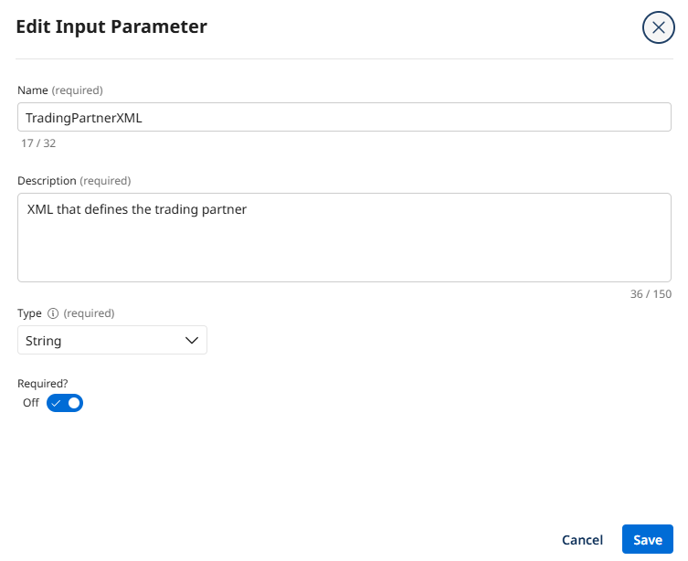
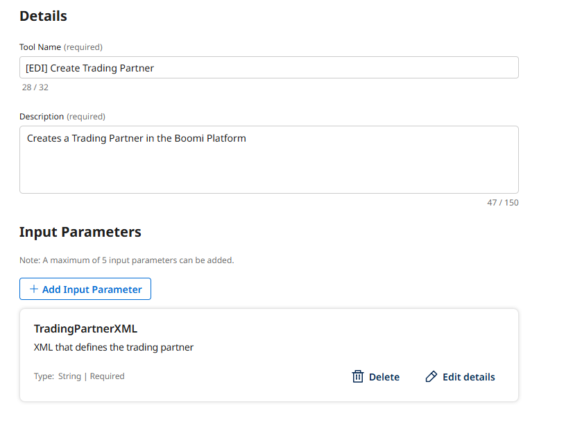
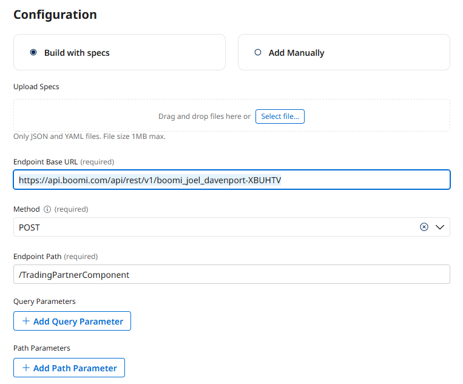
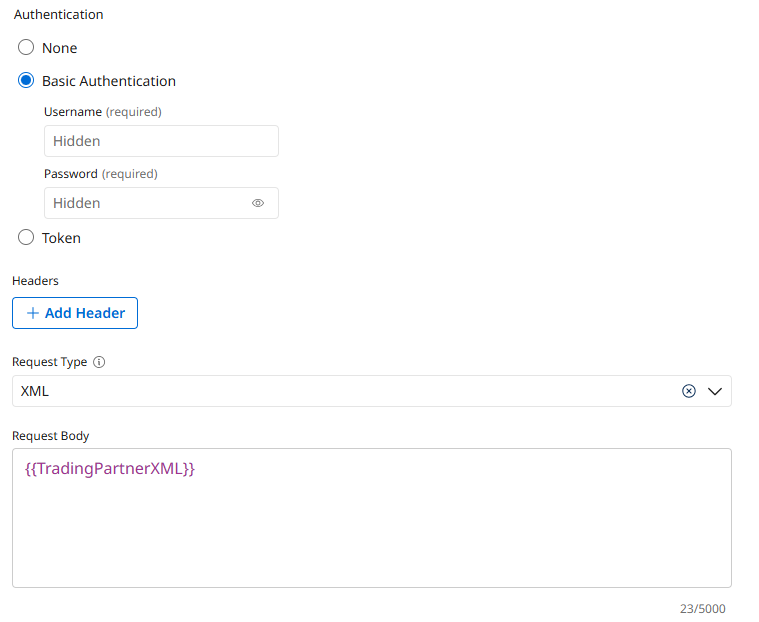
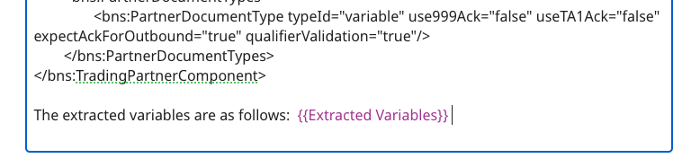
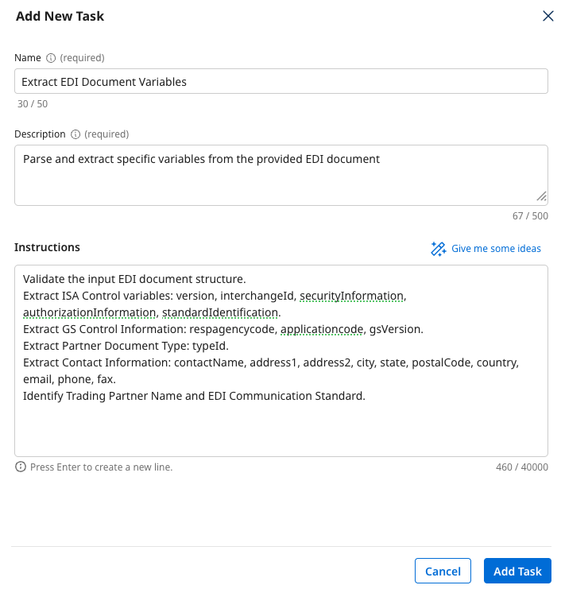
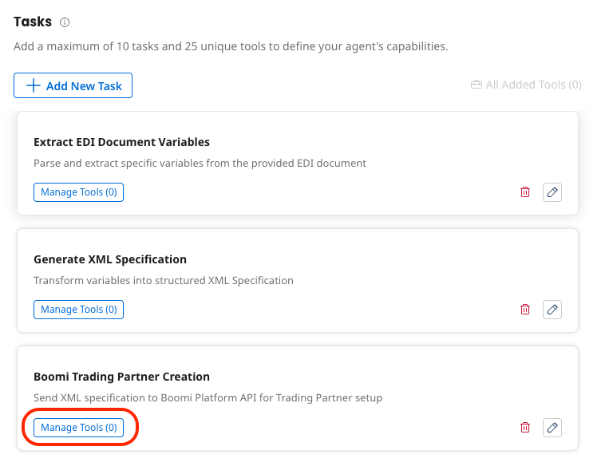
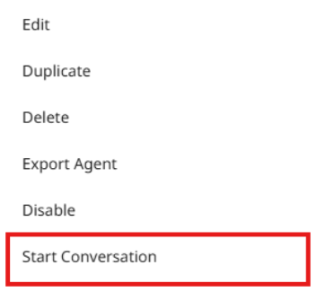
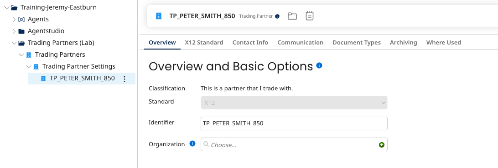

EDI Trading Partner Onboarding Lab
Build an EDI Trading Partner Onboarding Agent that automates partner data validation and creates trading partner configurations in the Boomi Platform from EDI X12 documents.
Connect-All Logistics must manually create Trading Partner components from EDI X12 documents — an error-prone, time-consuming process. This lab automates it completely using an AI agent that parses EDI documents, generates XML specifications, and calls the Boomi Platform API.
Canonical Source
This lab guide was authored for the Boomi Labs site. The canonical version with the latest updates can be found at https://labs.boomi.com/labs/supply-chain-logistics/edi-trading-partner-onboarding/intro.
Get Your Platform API Key
- Settings → Platform API Tokens → + Add New Token named 'EDI Agent Token' → Generate → Copy to Clipboard.
- Copy Account ID from Account Information.
Part 1: Create Tools
Create an API Tool for Trading Partners and a Prompt Tool for XML generation.
Create API Tool for Trading Partners
- Agentstudio → Agent Garden → Tools → Create New Tool → API → Add Tool.
- Tool Name: [builderInitials] Create Trading Partner | Description: This tool creates a Trading Partner in the Boomi Platform
- Input: TradingPartnerXML (String, Required On)


- Configuration: Add Manually
- Endpoint Base URL: https://api.boomi.com/api/rest/v1/{your account ID}
- Method: POST | Path: /TradingPartnerComponent
- Basic Auth: Username BOOMI_TOKEN.{your email} | Password: {your Platform API Token}
- Request Type: XML | Request Body: {{TradingPartnerXML}}


- Deploy Tool → Deploy.
Create Prompt Tool for XML Generation
- Create New Tool → Prompt Tool | Name: Generate TP XML [builderInitials]
- Input: Extracted Variables (String, Required)
- Prompt: You are provided with extracted variables from an EDI document in JSON format. Generate a complete XML specification for creating a Trading Partner...

- Add Example with componentName input/output. Deploy.
Part 2: Create Agent
Build the EDI Trading Partner Onboarding agent with three tasks: extraction, XML generation, and partner creation.
Create a New Agent
- Agent Garden → Agents → Create New Agent → Blank Template → I will add manually.

- Goal: Convert EDI documents into Trading Partner configurations on the Boomi Platform through automated extraction and API integration
- Name: [builderInitials] Trading Partner Onboarding | Voice: Professional
Create Task 1: Extract EDI Document Variables
- Instructions: Validate EDI structure. Extract ISA Control variables (version, interchangeId, etc.), GS Control Info, Partner Document Type, Contact Information, Trading Partner Name.

Create Task 2: Generate XML Specification
- Instructions: Create XML object with all extracted variables. Validate against ISAControlInfo, GSControlInfo, PartnerDocumentType, and ContactInfo specs. Assemble using Generate TP XML Prompt Tool.
- Manage Tools → Add Generate TP XML [builderInitials].
Create Task 3: Boomi Trading Partner Creation
- Instructions: Submit request to create new Trading Partner to the API. Validate successful creation.
- Manage Tools → Add [builderInitials] Create Trading Partner.

Deploy the Agent
- Save & Continue → Review tab → Deploy Agent → Deploy.
Part 3: Test the Agent
Submit a sample EDI document and verify the trading partner is created in the Boomi Platform.
Find Your Agent and Start Conversation
- Agent Garden → Agents → find your agent → three dots → Start Conversation.

Submit the EDI Document
- Paste the following prompt including the sample EDI:
Convert this EDI document into a Trading Partner:
ISA*00* *00* *ZZ*8019473100SOFS *12*4152562417 *250723*0915*U*00401*205781088*0*P*>
GS*PO*8019473100SOFS*4152562417*20250723*0915*205790705*X*004010
ST*850*211881063
BEG*00*DS*110885110-1*458589334*20250723
N1*ST*Peter Smith
N3*3123 main street*Apt 4B
N4*NY*NY*14850*US
[...full EDI document...]Verify the Trading Partner Was Created
- Navigate to Integration → Build. Find the Trading Partners (Lab) folder that was auto-created.

- Verify your new Trading Partner component appears in the folder.